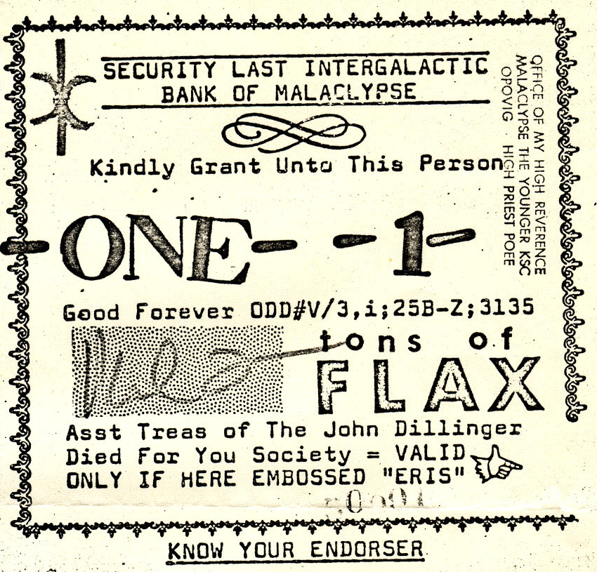

The JOHN DILLINGER DIED FOR YOU Society presents:
Flaxscript [FLAX]
The eschaton of the Illuminatus!
pseudobanking™ coin series; for use by the illuminated only.
CPU Only chained algorithm with in-client farming. Recognized and valid for all transactions and all factions
including the LDD, JAMs (and K9), ELF, and ETC. Designed for daily use as a
transactional method for the illuminated.
5 million total tons of flax and yes, The JDDFY Society took a 1% chunk up
front--a vault to secure the bank held here:
JUG1FYcNgJ2HQNdaRLsx4LZdpSLXSNp2yG
There is also an offering to Malaclypse of about .0046% included in the
first transaction--he's a fool but he is bankrolling this adventure.
Hail Eris, Hail Discordia!
Windows |
Mac | Source |
Decoder | Exchange